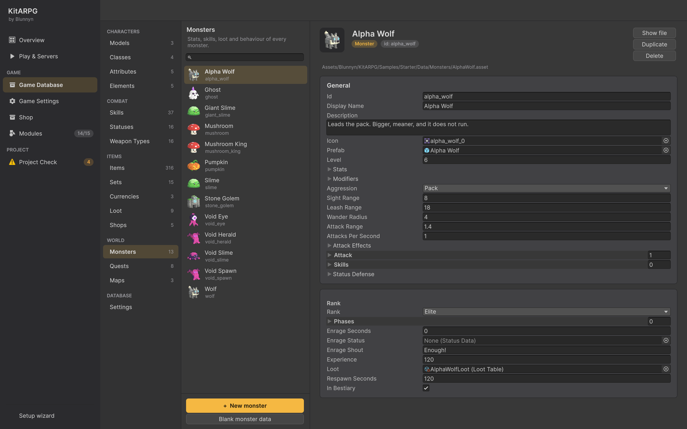

怪物
怪物由 Game Database 中的一个 MonsterData 资源，加上作为它在世界中身体的预制体组成。本页介绍怪物的每个字段、从任意 3D 模型创建怪物的向导、怪物刷怪点、服务器如何运行怪物的行为，以及怪物在单人模式和 MMO 中如何运作。
怪物是什么

怪物有两部分：
- 数据（
MonsterData，位于 Game Database 的 World > Monsters 下）。它说明怪物是什么：等级、数值、攻击、技能、行为、等阶、奖励和重生时间。世界中该怪物的每个副本都使用同一个数据资源。 - 预制体（
MonsterData.prefab）。它是身体：模型、网络、NavMesh 代理、点击碰撞体、Monster组件、动画和名牌。向导会为你制作它。
怪物通过地图场景中的 Monster Spawner、世界触发器、首领阶段（作为小怪）、召唤技能或 GM 命令 /spawn 出现在世界中。
首领和精英是等阶不同的怪物。它们的额外字段见首领页面。怪物掉落什么由掉落表决定。
在编辑器中的位置

打开 KitARPG 窗口（KitARPG > Open KitARPG，Ctrl/Cmd+Shift+K），进入 Game Database 并在 World 分组中选择 Monsters。列表显示每个怪物及其图标。选择一个会在右侧打开其卡片，字段按部分分组在卡片中。
列表底部有两个按钮：
| 按钮 | 作用 |
|---|---|
| + New monster | 在右侧面板打开四步向导。从 3D 模型创建数据和预制体。 |
| Blank monster data | 只创建 MonsterData 资源，使用默认值且没有预制体。当你已经有怪物预制体时使用。 |
你也可以在 Project 窗口中用 Create > KitARPG > Monster 创建该资源。这样创建的资源在你把它加入 monsters 列表之前不在数据库中。
从 3D 模型制作怪物
向导（+ New monster）有四步：Model、Combat、Animations 和 Create。某一步有问题时 Next 保持禁用，问题写在按钮上方。
第 1 步：Model
- 把 FBX 或预制体拖到模型字段中。预览会显示它。
- 下方的状态行在模型有
Animator时显示 Animated，没有时显示 No Animator。- Animated： 你在 Animations 步骤中选择它的片段。
- No Animator： 预制体会获得一个
MonsterBody组件。怪物移动时跳跃，静止时呼吸，攻击时前倾，被击中时闪烁，死亡时缩小消失，重生时从地面长出来。示例中的史莱姆、蘑菇和虚空怪物就是这样运作的。攻击仍会准时生效。
- 输入 Display name。第一次时由模型名称填入。下方的一行显示由它生成的 id，例如
Cave Bat变为cave_bat。
id 在怪物之间必须唯一。如果其他怪物已使用它，该步骤会提示。
第 2 步：Combat
-
Start from a monster 复制另一个怪物的一切：数值、技能、抗性、阶段、掉落等。要制作全新的怪物，保持 Nothing, start from the defaults。
-
在 How it fights 下设置数值：
字段 作用 默认值 Level 怪物的等级。对于比它高 3 级以上的玩家，经验会减少。 1 Rank Normal、Elite 或 Boss。精英和首领的名牌带有边框；首领在屏幕顶部有血条。 Normal Health 最大生命值。 50 Damage 普通攻击的最小到最大伤害及其元素。元素留空则使用数据库的默认元素。 1 到 3 Attack range (m) 近战约 1.4；射击类怪物更远。 1.4 Attacks per second 它挥击的频率。 0.8 Move speed 每秒米数。 3 Aggression Passive、Aggressive 或 Pack（参见行为）。 Aggressive -
在 Rewards 下设置 Experience、Loot table（留空则不掉落任何东西；掉落表在 Items > Loot 中制作）和 Respawn seconds。
第 3 步：Animations
仅适用于有 Animator 的模型。没有时，该步骤说明没有可选内容。
-
Start from a monster 复制另一个有动画的怪物的片段和命中时机。你在下面选择的片段会替换它们。
-
选择片段。空的会被跳过：没有 Hit 怪物不会退缩，没有 Death 它不会倒下。
片段 用于 Idle 站立不动 Walk 移动 Hit 受到攻击 Death 死亡 Attack 普通攻击 -
有攻击片段时，Hit lands at 说明伤害何时生效，从 0（片段开始）到 1（结束）。服务器会等到那一刻才应用命中。
第 4 步：Create
- Prefab folder 默认是数据库文件夹旁的
Prefabs文件夹。它必须在Assets内。完整的预制体路径显示在下方；如果那里已存在预制体，请修改名称或文件夹。 - 保持 Render its bestiary icon 开启，为怪物图鉴渲染头像。
- What will be made 列出数据、预制体和数据库条目。
- 按 Create monster。
数据资源放入数据库旁的 Monsters 文件夹，加入数据库的 monsters 列表，并在 Game Database 中打开。预制体获得：
NetworkIdentity和一个网络变换组件- 按模型尺寸设置的
NavMeshAgent（在客户端上关闭；只有服务器移动怪物） CapsuleCollider，玩家点击的区域Monster，以及它需要的FighterStatus、FighterMotion和CombatRelay- 带有你所选片段的
CharacterAnimations - 模型没有 Animator 时的
MonsterBody MonsterPlate，头顶的名字、等级和生命值
网络管理器会自动注册数据库中的每个怪物预制体。你不需要把它加入 Mirror 的可生成预制体。
要给怪物远程攻击，提高 Attack range，并在 Game Database 中为它的 attackEffects 设置一个投射物。动画留在预制体上；投射物和特效在数据上。
怪物的每个字段
Game Database 卡片显示以下字段。名称、描述和图标来自 GameData，即所有数据库资源的基类。
Identity
| 字段 | 作用 | 默认值 |
|---|---|---|
Id（id） |
随角色保存并通过网络发送。由文件名填入一次，之后保持不变。修改它会破坏使用该怪物的存档和任务。 | 来自文件名 |
Display Name（displayName） |
游戏中显示的名称。留空则使用资源的名称。 | 空 |
Description（description） |
在怪物图鉴中显示。 | 空 |
Icon（icon） |
用于怪物图鉴和任务目标的头像。KitARPG > Render Missing Monster Icons 会渲染缺失的头像。 | None |
Body and stats
| 字段 | 作用 | 默认值 |
|---|---|---|
Prefab（prefab） |
世界中的身体。需要一个 Monster 组件。Project Check 会报告没有预制体的怪物，或预制体没有 Monster 的怪物。 |
None |
Level（level） |
它的等级，显示在名牌上。也用于计算玩家获得的经验（参见经验）。 | 1 |
Stats（stats） |
最大生命值和法力值、恢复、威力、暴击几率和暴击伤害、治疗、攻击速度、移动速度以及其他数值。 | 50 生命值，3 移动速度 |
Modifiers（modifiers） |
在数值之上的元素伤害和抗性，固定值和百分比。示例中的史莱姆有 30% 水抗性，受到的风伤害增加 20%。 | 空 |
Status Defense（statusDefense） |
它能抵御或持续时间更短的状态：免疫标志（眩晕、定身、沉默……）、免疫标签、免疫状态以及以整数百分比表示的抗性（100 即免疫）。只阻挡来自他人的有害状态。参见状态与增益。 | 空 |
Behaviour and attack
| 字段 | 作用 | 默认值 |
|---|---|---|
Aggression（aggression） |
Passive、Aggressive 或 Pack。 | Aggressive |
Sight Range（sightRange） |
它注意到玩家的米数。Pack 怪物也会召集此范围内的其他怪物。 | 8 |
Leash Range（leashRange） |
它离开原位追击玩家多远后放弃并返回。 | 18 |
Wander Radius（wanderRadius） |
附近没人时它在原位周围游荡的米数。 | 4 |
Attack Range（attackRange） |
它能击中的米数。 | 1.4 |
Attacks Per Second（attacksPerSecond） |
基础攻击频率。其攻击速度数值会改变它。 | 0.8 |
Attack Effects（attackEffects） |
普通攻击的投射物和特效：每次命中时攻击者身上的特效、一个投射物，以及被击中者身上的特效（留空则使用元素的特效）。动画在其预制体上。 | 空 |
Attack（attack） |
普通攻击的取值，每种元素一个，各带最小值和最大值。多个条目构成混合攻击，例如 6 到 10 土伤害加 2 到 4 火伤害。 | 一个条目，1 到 3，默认元素 |
Skills（skills） |
它施放的技能（参见技能）。 | 空 |
Rank
| 字段 | 作用 | 默认值 |
|---|---|---|
Rank（rank） |
Normal、Elite 或 Boss。 | Normal |
Phases（phases） |
仅首领。参见首领。 | 空 |
Enrage Seconds（enrageSeconds） |
仅首领。战斗开始多少秒后狂暴；0 表示永不。 | 0 |
Enrage Status（enrageStatus） |
仅首领。狂暴时施加在自己身上。 | None |
Enrage Shout（enrageShout） |
仅首领。狂暴时说的话。 | "Enough!" |
Rewards and respawn
| 字段 | 作用 | 默认值 |
|---|---|---|
Experience（experience） |
击杀它的基础经验。 | 10 |
Loot（loot） |
它的掉落表。多个怪物可以共用一个。留空则不掉落任何东西。 | None |
Respawn Seconds（respawnSeconds） |
死亡后多少秒重新出现。 | 30 |
In Bestiary（inBestiary） |
是否列入怪物图鉴。对于收税员或没人狩猎的召唤物等辅助单位请关闭。 | On |
预制体上：Monster 组件
这些位于预制体的 Monster 组件上，而不在数据上。
| 字段 | 作用 | 默认值 |
|---|---|---|
Think Interval（thinkInterval） |
两次决策之间的秒数。怪物会被错开，这样满是怪物的地图不会在同一帧思考。 | 0.2 |
Corpse Seconds（corpseSeconds） |
尸体留在倒下处的秒数，之后会被移回原位、隐藏起来等待重生。 | 1 |
MonsterBody 组件（没有 Animator 的模型）有 Model（model，移动的子对象；留空则使用第一个子对象）、Hop Height（hopHeight，0.08）、Hops Per Meter（hopsPerMeter，2.5）和 Hit Color（hitColor，淡红色闪光）。
等阶
| 等阶 | 有什么变化 |
|---|---|
| Normal | 没有特别之处。 |
| Elite | 名牌上的名字为金色并带有 "Elite" 标签。怪物图鉴和世界地图以精英颜色显示它。它的数值由你设定：等阶本身不增加任何数值。 |
| Boss | 战斗时屏幕顶部有血条、阶段、狂暴计时器，以及返回原位时完全重置。参见首领。 |
行为
服务器为每个怪物运行一个小型 AI，大约每秒五次：
- 攻击性。
- Passive： 从不主动开战。被攻击时会反击。
- Aggressive： 攻击 Sight Range 内能看到的最近敌人。
- Pack： 与 Passive 类似，但当其中一个被攻击时，其 Sight Range 内所有同类且没有目标的怪物都会加入。示例中的蘑菇就是这样。
- 视线。 它只注意到按游戏的视线规则（Game Settings > Combat > Line Of Sight）能看到的玩家。在墙后时，它会绕过去而不是隔墙攻击。隐身的玩家不会被注意到。
- 仇恨。 对它造成的伤害，以及对它正在战斗的对象的治疗（Game Settings 中的 Heal Threat），会让它对某人产生仇恨。当另一名战斗者的仇恨超过当前目标的 Threat Switch 倍（默认 1.1）时，会吸引它的注意。
- 拴绳。 如果它离原位超过 Leash Range，它会放弃：忘记目标和仇恨，回满生命值并走回原位。
- 游荡。 没有战斗对象时，它每 3 到 8 秒走到原位 Wander Radius 内的一个随机点。
- 休眠。 开启 Monsters Sleep Unseen（Game Settings，Combat）时，没有玩家能看到的怪物会停止思考，直到有人靠近。它在大地图上节省服务器时间。
技能
怪物使用其 Skills 列表中第一个就绪且能够到目标的技能，然后等待其攻击间隔。怪物以 1 级瞬发施放技能，冷却至少 1 秒。被动技能会被跳过。以自身为中心的范围技能会等到目标进入该范围内。技能在 Combat > Skills 中制作；参见技能。
死亡与重生
- 击杀归属于造成伤害最多的玩家，而不是最后一击。
- 该玩家获得经验（与附近的队友分享）和掉落。参见掉落。
- 尸体在原地停留 Corpse Seconds，然后被移回原位并隐藏。
- Respawn Seconds 后，它在原位点以满生命值重新出现。
由事件带来的怪物（世界触发器、/spawn）不会重生：它们在死亡 4 秒后消失。召唤物在死亡 2 秒后消失，且不提供奖励。
经验
玩家获得的经验是怪物的 Experience，按等级差缩放：比怪物高最多 3 级时为全额，之后每多一级减少 20%，最低为 10%。10 级玩家击杀 5 级怪物（高 5 级）获得 60%。然后应用玩家的 Experience Gain 数值和服务器的经验倍率。在队伍中，附近的队员会分摊经验。参见战斗和好友与队伍。
怪物刷怪点
Monster Spawner 在地图上的一个圆形范围内保持一定数量的某种怪物。
字段
| 字段 | 作用 | 默认值 |
|---|---|---|
Monster（monster） |
它生成的怪物。 | None |
Count（count） |
它保持的数量。 | 5 |
Radius（radius） |
刷怪点周围怪物出现的米数。每个怪物落在其随机点 3 米内的 NavMesh 上。 | 8 |
When（when） |
Always、Day（白天出现，夜晚消失）或 Night。使用游戏时钟；参见昼夜。 | Always |
Scene 视图把半径绘制为一个红色圆圈。
设置刷怪点
- 打开地图场景。
- GameObject > Create Empty，命名，例如
Bat Spawner。 - Add Component > Monster Spawner。
- 选择 Monster，设置 Count 和 Radius，把对象移到怪物应该栖息的地方。让它保持在 NavMesh 上，并远离
SpawnPoint，这样死亡后返回的玩家是安全的。 - 保存场景。
- 在 Game Database 中地图的卡片上按 Read from scene，让怪物图鉴为这张地图列出该怪物。参见地图。
运作方式
- 它只在服务器上起作用。在客户端上它是一个空对象。
- 它在地图启动时一次性生成全部数量。之后每个怪物在其 Respawn Seconds 后在它第一次出现的点自行重生。刷怪点不会补足数量。
- When 设为 Day 或 Night 时，它每 2 秒检查一次。到了它们的时间，全部数量出现。时间结束时，它们会离开，即使正在战斗。
- 怪物没有预制体或预制体没有
Monster组件的刷怪点会记录错误且不做任何事。Project Check 会对没有怪物的刷怪点发出警告。
首领通常是 Count 为 1、Radius 为 0 的刷怪点，因此它总是站在同一个位置。也给它一个较小的 Wander Radius，就像示例中的 Mushroom King（1.5）。
单人模式和 MMO
- 单人模式： 游戏就是主机。怪物与玩家在同一台机器上运行，使用同样的 AI。
- MMO： 每张地图运行在自己的地图服务器上。怪物只存在于该服务器上；客户端接收它们的位置、生命值和动画。客户端无法改变怪物。
- 实例化地图： 每个副本都有自己的怪物，由副本自己的刷怪点生成。地图服务器加载的第一个场景是一个模板，其刷怪点保持空闲。参见副本。
测试怪物
使用 GM 命令（开启 Single Player Commands 时，在单人模式中始终允许）：
/spawn monster_id 3在你面前召唤三只。它们不会重生。/killall 20杀死 20 米内的怪物；它们会给出奖励。/god让你在观察战斗时不受伤害。
参见 GM 命令。
常见错误
- 怪物没有出现。 刷怪点不在 NavMesh 上，怪物没有预制体，或者场景不是地图使用的那个。
- 它穿墙攻击。 视线设为 Off，或者墙壁不是 NavMesh 中的空洞（NavMesh 模式），或不在视线阻挡层上（Colliders 模式）。
- 它从不攻击。 Aggression 为 Passive，或 Sight Range 小于玩家经过的距离。
- 它在战斗中跑回去回满血。 它超出了 Leash Range。提高该值，或把刷怪点移离玩家拉怪的位置。
- 重命名后已保存的任务或图鉴条目损坏。 你修改了 Id。请改为修改显示名称。